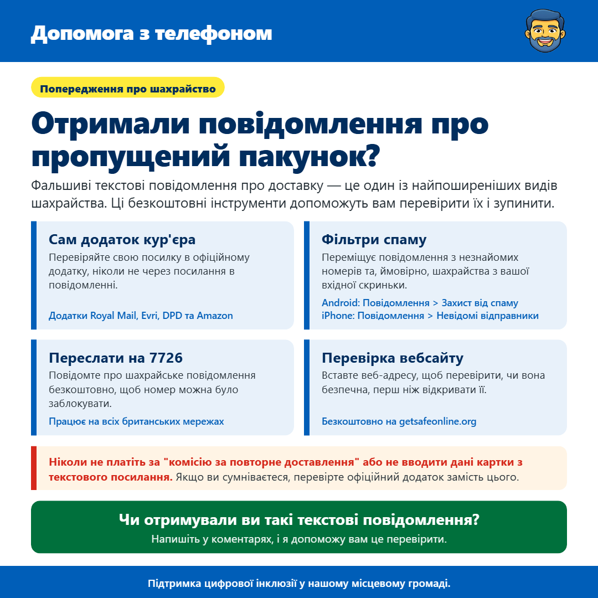

Отримали повідомлення про пропущений пакунок?
Від Джеймса Гартшора · · Оもので та як залишатися в безпеціКоротко кажучи
- Власне додаток кур'єра: Перевіряйте свій пакет у офіційному додатку, ніколи не через посилання в повідомленні. (Додатки Royal Mail, Evri, DPD та Amazon)
- Фільтри спаму: Переміщують повідомлення з незнайомих номерів та ймовірних шахрайств з вашої вхідної скриньки. (Android: Повідомлення > Захист від спаму; iPhone: Повідомлення > Невідомі відправники)
- Переслати на 7726: Повідомте про шахрайське повідомлення безкоштовно, щоб номер можна було заблокувати. (Працює на всіх британських мережах)
- Перевірка сайту: Вставте веб-адресу, щоб перевірити, чи вона безпечна перед тим, як відкрити її. (Безкоштовно на getsafeonline.org)

Привіт усім, я хотів поділитися попередженням про фальшиві повідомлення про доставку посилок, оскільки це одна з найпоширеніших шахрайських схем на даний момент.
Вони зазвичай виглядають як це: "Royal Mail: ваша посилка не була доставлена. Будь ласка, оплатіть плату за повторну доставку £1.45 за цим посиланням." Інші стверджують, що це від Evri, DPD або Amazon, або кажуть, що є збори за митне оформлення. Посилання веде на сайт, який виглядає справжнім, але він призначений для викрадення ваших даних картки. Оскільки ми всі чекаємо на посилку одночасно, вони можуть бути дуже переконливими.
Найбезпечніший спосіб перевірити — скористатися власним додатком або веб-сайтом кур'єра, а не будь-яким посиланням у повідомленні. Royal Mail, Evri, DPD та Amazon мають безкоштовні офіційні додатки, де ви можете відстежувати свої посилки. Якщо справді є проблема з доставкою, вона буде там відображена.
Ваш телефон також може допомогти уникнути цих повідомлень у папці для спаму. На Android відкрийте додаток Messages (Повідомлення), перейдіть у Налаштування та переконайтеся, що захист від спаму увімкнено. На iPhone перейдіть у Налаштування, потім у Додатки, потім у Повідомлення і увімкніть опцію фільтрації невідомих відправників. Повідомлення з номерів, які ви не знаєте, потраплять у окремий список.
Якщо ви все ж отримаєте таке повідомлення, ви можете повідомити про це безкоштовно, перенаправивши його на 7726. Це працює на всіх британських мережах і допомагає їм заблокувати номер, щоб він не міг потрапити до інших людей. Потім просто видаліть його.
І якщо ви коли-небудь не впевнені щодо посилання, Get Safe Online має безкоштову перевірку сайту на getsafeonline.org. Вставте веб-адресу, і він скаже вам, чи виглядає вона безпечною.
Головне, що потрібно пам'ятати, це ніколи не платіть за плату за повторну доставку та не вводити дані вашої картки за посиланням у повідомленні. Якщо ви думаєте, що могли вже ввести свої дані, негайно зв'яжіться зі своїм банком, зателефонувавши за номером 159.
Якщо ви отримали таке повідомлення і не впевнені, чи воно справжнє, просто надішліть мені повідомлення, і я зроблю все можливе, щоб допомогти.
Сподіваюся, це допомогло, і не соромтеся передавати це будь-кому, хто може знайти це корисним.